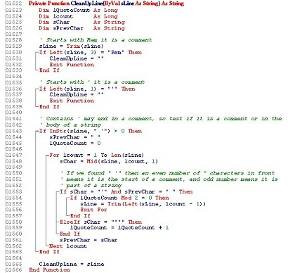

¿Les ha pasado que están súper inspirados escribiendo código pero repentinamente
necesitas una luz divina que les diga qué nombre ponerle a la variable que están a punto de escribir?
Como Frontend, hay tantas cosas que debo nombrar en
en mi día a día: clases para cada elemento HTML, variables en Stylus que puedan se reutilizables,
componentes, archivos, funciones...Tengo que poner a volar mi imaginación para poder lograrlo.
A pesar de que es algo que depende totalmente de nosotros y no hay una forma estrictamente correcta o incorrecta de hacerlo,
nombrar cada elemento es un trabajo en el que debemos poner empeño, pues se verá impactado en la organización de mantenibilidad de nuestro codigo.
Fanny es la parte del Team Platzi. si quieres una carrera en Frontend, empieza por el
Curso de Desarrollo Web y luego el Curso de Responsive Design.
Lo más importante es que el nombre que la asignes siempre refleje el trabajo que está haciendo, de esta forma podemos incluso reducir la necesidad de comentar cada línea de código con su funcionamiento.
A continuació algunos consejos que hay que seguir para evitar algún desastre a la hora de nombrar un elemento en tu código.
- Nombres descriptivos
- Nombre conformados por un conjunto de palabras
- La longitud de el nombre asignado
Nombres descriptivos
Abreviar nombres puede que en algunos casos no sea tan buena idea. Seguramente con el paso del tiempo o cuando un nuevo desarrollador tenga que darle
mantenimiento a tu código habrá quedado en el olvido lo que esa variable representa. Lo ideal es utilizar nombres que describan la funcionalidad de nuestro código.
Por ejemplo, es mucho más descriptivo escribir:

Que:
Nombres conformados por un coonjunto de palabras
Generalmente los lenguajes de programación no permiten espacios en las variables. Sin embargo hay distintos metodos para separar el conjunto de palabras que conforman una variable y
que de esta manera logren ser mas legibles. Esto se puede hacer >capitalizando cada palabra agrupada (camelCase) o separando cada palabra con underscore
(snake_case).e_case).
Por ejemplo:

o

La longitud de el nombre asignado
A pesar de que los nombres de variables cortos deben ser sistituidos por nombres de variables mas largos y descriptivos, >no quiere decir que tenemos que usar frases completas.
Es importante que el nombre describa que es lo que codigo asignado hace y no como lo hace. utilizar un nombre largo puede incluso ser mas suceptible a errores
tipograficos a la hora de escribirlo. Se dice que la longitud recomendable es de 2 a 4 palabras entre 6 y 20 caracteres.
En conclusion nombrar elementos no es dificil, mas bien es un super poder o habilidad que va mejorando con la practica. Nosotros como desarrolladores tenemos la responsabilidad de hacerlo lo mejor posible.
Si recien comienzas a programar, te invito al Curso de programacion basica para empezar a implementar estos consejos en tus projectos. y si llevas ya tiempo programando
sin hacer uso de ellos, compartelos como te va siguiendo estas recomendaciones. Estoy segura que los desarrolladores que se topen con tu codigo en el futuro te agradeceran.